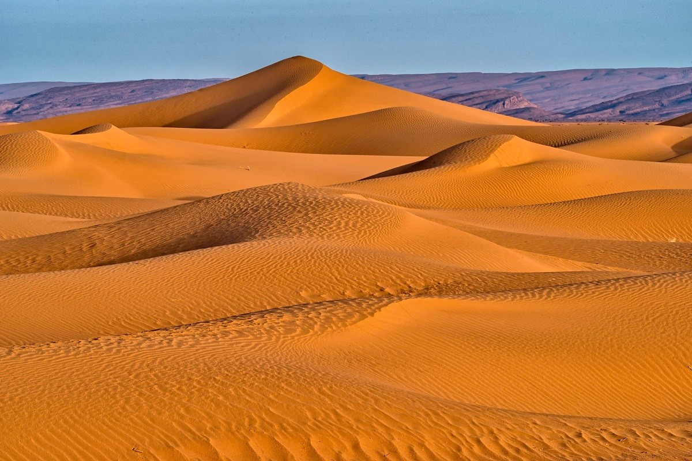
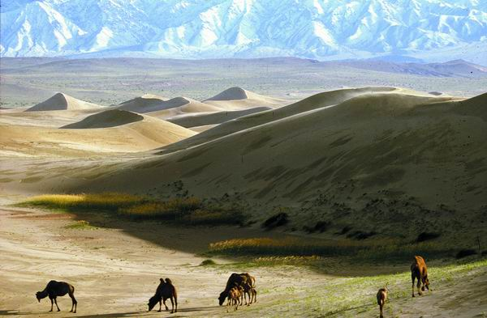
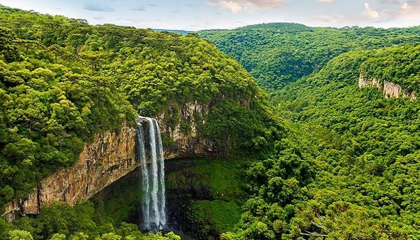

DESIERTO DE LA TATACOA
El desierto de la tatacoa queda en colombia y es uno de los mas bonitos del pais ...
Leer Más
Leer Más

DESIERTO DEL SAHARA
El desierto del sahara es uno de los mas famosos del mundo y queda en África del Norte ...
Leer Más
Leer Más

DESIERTO DE GOBI
El Desierto De Gobi es una gran región desértica situada entre el norte de China y el sur de Mongolia ...
Leer Más
Leer Más

LA SELVA AMAZONICA
La Selva Amazonica se encuntra en Ameria del sur y tiene el Ecosistema mas grande del mundo ...
Leer Más
Leer Más

LAS SELVAS Y ARRECIFES DE AUSTRALIA
Australia posee una gran variedad de ecosistemas y especies únicas sorprendentes ...
Leer Más
Leer Más

LA SELVA DEL CONGO
La Selva Del Congo es el segundo bosque tropical mas grande del mundo ...
Leer Más
Leer Más
lost